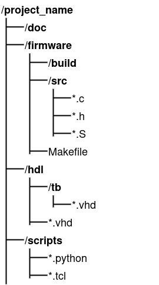

4 - Simulation
In this course you will have to work both on the hardware and on the software. To facilitate this kind of designing, it will be useful to run simulation as smooth as possible.
Before jumping to the testbench, it might useful to briefly refresh the concept of synthesisable hardware.
All hardware description languages (HDLs) have a lingo that is used to describe a hardware design. Typically, these HDLs also have parts of their language dedicated to verification. The parts of the HDL that describe components that can be made are the synthesisable subset of that language.
Example of synthesiable code:
z <= x when y = '0' else '0';
Example of non-synthesiable code:
process (y, x)
begin
z <= '0'';
wait until y = '0'
z <= x;
end process;
Non-synthesisable code is used for testing/verification. A typical use for it is to describe models of component.
library IEEE;
use IEEE.STD_LOGIC_1164.ALL;
use IEEE.NUMERIC_STD.ALL;
use IEEE.STD_LOGIC_MISC.or_reduce;
use ieee.std_logic_textio.all;
use STD.textio.all;
entity basicIO_model is
generic (
G_DATA_WIDTH : integer := 32;
FNAME_OUT_FILE : string := "data.dat"
);
port (
clock : IN STD_LOGIC;
reset : IN STD_LOGIC;
di : IN STD_LOGIC_VECTOR(G_DATA_WIDTH-1 downto 0);
ad : IN STD_LOGIC_VECTOR(G_DATA_WIDTH-1 downto 0);
we : IN STD_LOGIC;
do : OUT STD_LOGIC_VECTOR(G_DATA_WIDTH-1 downto 0);
writing_out_flag : OUT STD_LOGIC
);
end entity basicIO_model;
architecture Behavioural of basicIO_model is
-- localised inputs
signal clock_i, reset_i, we_i, writing_out_flag_o : STD_LOGIC;
signal di_i, ad_i, do_o : STD_LOGIC_VECTOR(G_DATA_WIDTH-1 downto 0);
file ofh : text;
begin
-- (DE-)LOCALISING IN/OUTPUTS
clock_i <= clock; reset_i <= reset;
di_i <= di; ad_i <= ad;
we_i <= we;
do <= do_o; writing_out_flag <= writing_out_flag_o;
-- COMBINATORIAL
writing_out_flag_o <= we_i when ad_i = x"80000000" else '0';
-- MEMORY
PMEM: process(reset_i, clock_i)
variable v_line : line;
variable v_temp : STD_LOGIC_VECTOR(G_DATA_WIDTH-1 downto 0);
variable v_pointer : integer;
begin
if reset_i = '1' then
file_open(ofh, FNAME_OUT_FILE, write_mode);
elsif rising_edge(clock_i) then
if we_i = '1' then
if ad_i = x"80000000" then
write(v_line, di_i);
writeline(ofh, v_line);
end if;
end if;
end if;
end process;
end Behavioural;
This example shows the model for a basic input/output component. This code is non-synthesisable, but will be useful for testing. For the sake of completeness, the content and the working of this model are discussed below.
Text IO
The first part is the setting of the library and the usage of the packages. Note that there are includes for text_io. This is a first sign of the fact that this code will not synthesise.
Generics
In de entity definition, two generics are used. These generics are parameters that are defaulted to the set values. As a reminder it is mentioned that these default values are only used when they are not explicitly set upon instantiation.
Signals
Signals are made to interconnect things in this entity. Although it is not mandatory, this model ties signals to all the inputs and outputs. As a reminder for the hardware designer, the signals are suffixed with either _i for inputs or with _o for outputs.
Some simulators behave (slightly) different when ports are used in comparison to when signals are used. Another reason for outputs to add a signal is that these signals can be use interally as well, in contrast to out ports.
Finally, signals are declared between architecture and its begin. This is also the location where component declarations happen (which is not the case in this model).
When you have to make a component declaration, simply copy-paste the entity of that component here. Then replace the keyword entity with the keyword component.
Behaviour
Between the begin and and of the architecture, the desired behaviour is described. In this case the following functionalities are implemented:
- The output port writing_out_flag will be high when the address is 0x8000_0000 and the WE (write enable) signal is high
- Upon reset, a file is opened for writing. The filename is given through a generic.
- When a write is done to address 0x8000_0000, a variable (v_line) is set with the incoming value. Subsequently the variable is written to the file handle.
With this description of the model (and the earlier C-example for printing), it should be clear what it is used for 😉.
The testbench that will be used in this course will start with a description like shown below.

With the testbench set up like shown above, a (relatively) fast way of developing-and-testing is facilitated.
In case you are using Vivado to simulate your design, testing a new version of the firmware is easy. Simply restart the simulation, as in: hit the Restart button. When you also make modifications to your hardware design, you have to relauch te simulation. The latter takes more time than restarting.
The proposed approach for developing and testing
Working in an organised way might look cumbersome, but it will definetly pay of on the long(er) run. The remainder of this section describes one way of working.

It all starts on the filesystem
The code that you will be writing can ultimately be seen as as bunch of files. It is recommended that you stick to a certain organisation. As with many things that will follow (in this course, or in ’live’), this might require an investment, but you will reap the fruits of this later and multiple times.
This image shows a way of organising:
- project name: this folder is simply the name of the project, or the exercise that you are working on;
- doc: it makes sense (as you undoubtedly know) to keep some documentation. This can be in the form of markdown files, for example;
- firmware: The folder that hold everything that has to do with software
- build: an empty folder that will be used store intermediate files (e.g. object files)
- src: a folder for the .h and .c files
- Makefile: … well, this is the Makefile for your .elf
- hdl: a folder for the hardware description files
- tb: a folder for the non-synthesisable code
- .vhd: non-synthesisable .vhd files
- .vhd: synthesisable .vhd files
- tb: a folder for the non-synthesisable code
- scripts: a folder for scripts
- python: python tools
- tcl: project generation scripts
A fixed file structure, like the one described above, will ensure that:
- you can more easily find your way
- you can (re-)generate tool-dependant projects
- you have a text-file-only folder that is perfect for version control